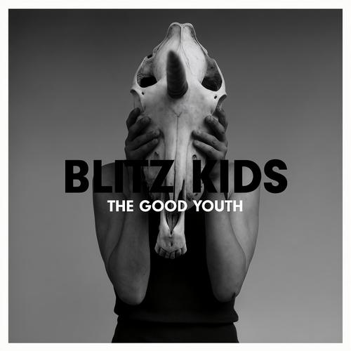

Music
一些适合把灯关掉以后再听的歌。
没有顺序，也没有理由。有些声音不是让人振作的，只是陪你把一段很长的夜晚听完。

0:00--:--
vol
playlist
有时候一首歌结束以后，不马上播放下一首。那几秒空白也算音乐的一部分。
no categories
我不太会给喜欢的东西分类。
有些歌适合晴天，有些歌适合公交车最后一排，还有一些只适合没人说话的时候。
真正喜欢的，大概是听完以后会在原地坐一会儿的那种。
▌
status: still here, mostly quiet
一些适合把灯关掉以后再听的歌。
没有顺序，也没有理由。有些声音不是让人振作的，只是陪你把一段很长的夜晚听完。

有时候一首歌结束以后，不马上播放下一首。那几秒空白也算音乐的一部分。
我不太会给喜欢的东西分类。
有些歌适合晴天，有些歌适合公交车最后一排，还有一些只适合没人说话的时候。
真正喜欢的，大概是听完以后会在原地坐一会儿的那种。